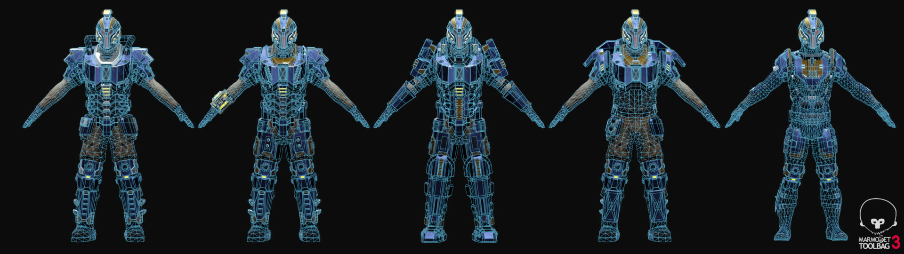

With over a decade worth of programming experience I graduated Heriot-Watt university with a degree in Computer Science (1st class honours) as well as multiple awards.
3D Graphics and animation
I have a passion for 3D modelling and animation, and have experience working on content for award-winning games as well as expertise with most industry standard software.
photography
I also enjoy film photography, and use it as an excuse to practice my compositional techniques.
software
Maya
Blender
Marvellous Designer
Zbrush
Unity
GIMP
Substance Designer
Substance Painter
Photoshop
Illustrator
After Effects
Marmoset Toolbag
C#
C++
Python
SQL
HTML
CSS
Bootstrap
JavaScript
Portfolio
Below is a curated selection of my own work. Click on a thumbnail to see more.
Film photography is a hobby of mine. Below Is a small sample of my work, with more on avalible on instagram. All of my work is shot with a Zenit-E (1961) Click the thumbnail to see more.
Swelter
Album art for a local musician.
Scotland
Capturing the spirit of my home.
America
Adventures over the pond.
London
Its a London thing.
-->
Contact
Euan McKay
Artist, Designer, Programmer
NSO Alpha Helmets
Contracted helmet set for 'Planetside 2'
Front view.
Whilst working on a cosmetic for 'Planetside 2' I was contacted by the games producer who asked if he could have the items finished as a commission rather than having them sold in the cash shop.
Working with him and the games art team I produced 3 Helmets for the upcoming 'NSO' faction. As these are among the first cosmetics to be introduced to this faction I am glad to have been able to help shape the aesthetic of this upcoming feature in the game
Alpha-Assault Helmet.
Alpha-Tactical Helmet.
Operative Helmet.
Date: Febuary 2019
Client: DayBreak Games/Nick Silva
Software: Blender/Player Studio
NSO traveller helmet
Cosmetic helmet set for 'Planetside 2'
In-engine view.
Cosmetic helmet to be sold in the cash shop of 'Planetside 2'. The creation of this helmet had the limitation of being unable to create custom textures or bakes, instead having to rework the body texture to work for the head.
This helmet also had to fit within the aesthetic styling of the previewed NSO characters, whilst also trying to push boundaries into being something unique to appeal to players.
Front view.
Rear view.
Date: Febuary 2019
Client: DayBreak Games
Software: Blender/Player Studio
Arbiter Armour
Cosmetic armour set for 'Planetside 2'.
Promotional render.
This armour set is one of a trio of sets made for 'Planetside 2', designed to capture the militaristic spirit of the 'TR' faction.
When working on this project I was bound by technical limitations of a low poly limit, as well as being constrained to using the existing texture sheets and bakes currently in-game.
Items for Planetside 2 like this also had to match an existing aesthetic style and unit identification, whilst also being unique enough to entice players into purchasing them in the cash shop.
The Header image for this item was a runner-up in the 'Planetside 2 Loading screen Contest', and was featured on the developers website.
In-game view.
Front view.
Back view.
Mesh view.
Date: Febuary 2018
Client: DayBreak Games
Software: Blender
Rift Knight Armour
Cosmetic armour set for 'Planetside 2'.
Promotional render.
This armour set is one of a trio of sets made for 'Planetside 2', designed to capture the Alien tones of the 'VS' faction.
When working on this project I was bound by technical limitations of a low poly limit, as well as being constrained to using the existing texture sheets and bakes currently in-game.
Items for Planetside 2 like this also had to match an existing aesthetic style and unit identification, whilst also being unique enough to entice players into purchasing them in the cash shop.
In-game view.
Front view.
Back view.
Mesh view.
Date: October 2018
Client: DayBreak Games
Software: Blender
Spartan Armour
Cosmetic armour set for 'Planetside 2'.
Promotional render.
This armour set is one of a trifecta of sets made for 'Planetside 2', designed to capture the Rugged aesthetic of the 'NC' faction.
When working on this project I was bound by technical limitations of a low poly limit, as well as being constrained to using the existing texture sheets and bakes currently in-game.
Items for Planetside 2 like this also had to match an existing aesthetic style and unit identification, whilst also being unique enough to entice players into purchasing them in the cash shop.
In-game view.
Front view.
Back view.

Mesh view.
Date: March 2017
Client: DayBreak Games
Software: Blender
MK 23 Armour
Cosmetic armour set for 'Planetside 2'.
Promotional render.
I was contacted by a client wanting a custom suit of armour for their character for Planetside 2. I was provided with some very rough sketches (below) by the client and from there produced the in-game asset. The item is not in-game yet but the client is satisfied with the work ("Amazing") and it is on-track to arrive in-game soon.
When working on this project I was bound by technical limitations of a low poly limit, as well as being constrained to using the existing texture sheets and bakes currently in-game.
Clients Drawing.
Front view.
Mesh view.
Date: October 2018
Client: Private Client/DayBreak Games
Software: Blender/Marmoset
Industrial Cyborg
Personal Project
Front view.
I wanted to experiment with Blenders new rendering engine and to really push myself when creating this character.
Working in Blender, Substance Painter and Zbrush I fully modeled, textured and rigged this cyborg. I wanted to make something realistic, as well as something layered, with lots of moving parts, removable panels and details.
Animated view.
Front/back/side views.
Details
Date: May 2019
Software: Blender/Zbrush/Eevee/Substance Painter
Mechmania
Physics-based indie game.
Splash screen.
Over the past few months a fellow developer and I have been working on our own indie game. Currently in-alpha, progress is steadily moving forwards, with positive results from all our in-house testing.
The game allows for players to construct a custom mech, and then compete with other players locally and online in physics-driven battles.
The screenshot below shows 2 players constructing their mechs. Players can navigate between tabs to select diffrent parts and colours for their mech.
The construction of mechs is a vital game loop, allowing players to customize their playstyle, as well as allowing for emotional investment, increasing player retention.
Builder screen.
GamePlay
Below are some early alpha screenshots of gameplay.
Levels
One of my responsibilities was to build and design levels for the game.
The main constraint of levels was that the game loop relies upon being able to knock opponents into the lava, and so levels had to have a mix of cover, but also angles to knock players off. Levels also had to be simple enough to keep gameplay intuitive, and keep performance stable.
My honours project for university was to develop and program a system in unity to develop a system to procedurally generate a building from a given tile set.
Screenshot showing the functional minimap.
The project is very flexible and can produce a variety of styles of building; and contains an easy interface to swap in tile sets; allowing for the expansion of the current building, or repurposing the software for a range of uses such a city generation or the building of an office.
Screenshot showing the 3 postprocessing filters developed.
The pathways between the rooms are set using a variety of algorithms and each floor of the building is a complete data structure and graph; allowing for paths to be built and tested. A render culling algorithm was also custom built for the project, ensuring performance as well as a procedurally generated mini-map.
Screenshot showing 3 potential levels.
UML diagram of the code.
Date: April 2018
Client: Heriot-Watt University
Software: Blender/Unity/Substance Painter/C#
Robot Boy
Personal project.
Idle animation.
A personal project with which I wanted to challange myself to work with new technology when creating this character.
This marked my first major foray into character design with Substance & Marmoset, and was a challenge to humanize a non-human character.
I did this by adding little details such as ports resembling freckles, or with colours and silhouettes (such as the knobbly knees).
Close up of the face.
Trendy stickers adorn the bat, much like a skateboard or laptop.
Rear view.
Date: April 2017
Software: Blender/Substance Painter/Marmoset
Autonomous Warfare Drone
Personal project.
Idle animation.
A personal project, and an early venture into game asset development.
Low-poly robot, created as practice to learn more about PBR workflows and HDRI lighting.
Front view.
Rear view.
Date: December 2016
Software: Blender/Substance Painter/Marmoset
Swealter Album Art
A few summers ago I worked with a local musician to produce a cover for her latest EP. We had a rough idea of the general image we wanted and so we set up some shoots in the local area.
Above is the album art, whilst below are a few of the photos that didn’t quite make the cut, as well as a link to the EP.
For the past 5 years I've been recording my surroundings in the beautiful city of Edinburgh, and whilst it can be easy to let it all become familiar there is a charm to the place that never fades.
America
In my travels I seem to find myself regularly across the ocean in the states. Despite the best efforts of the airport staff my camera and film seems to still make it through most trips.
Many of these photos are from my trip to Seattle, and mt Rainier (photo 2) is still one of the most awe-inspiring sights I've ever seen.
London
For better or worse London has left its mark everywhere; whether its food, culture, music or a chip on my cameras lens.